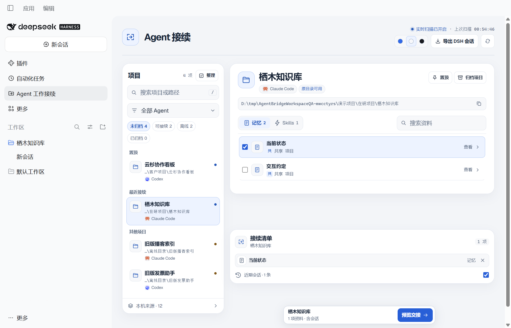
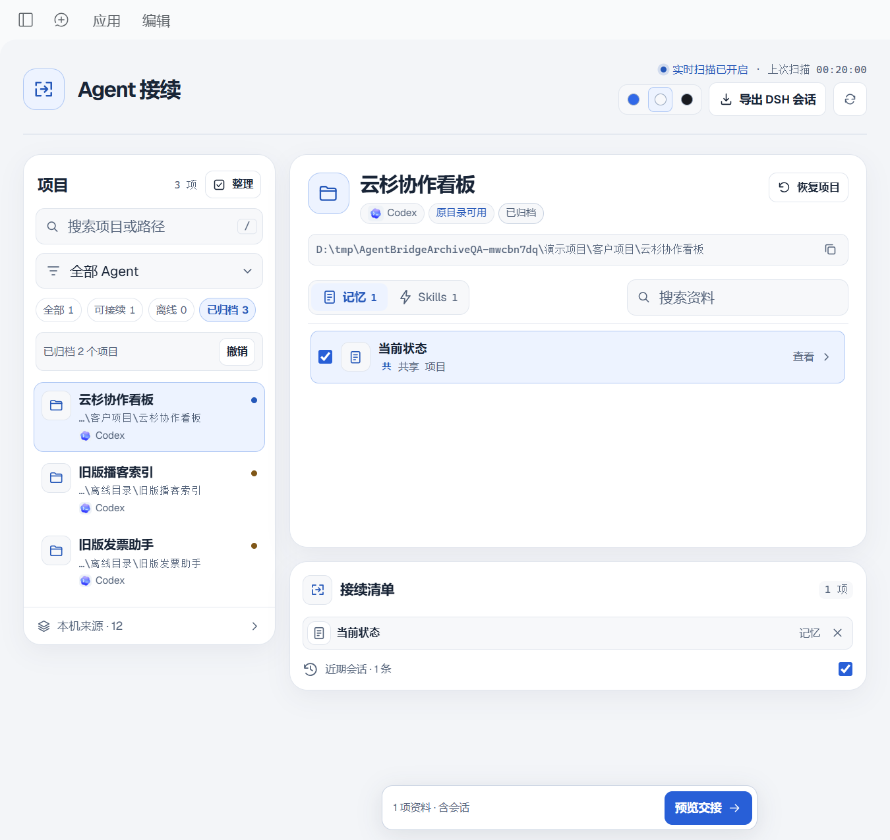
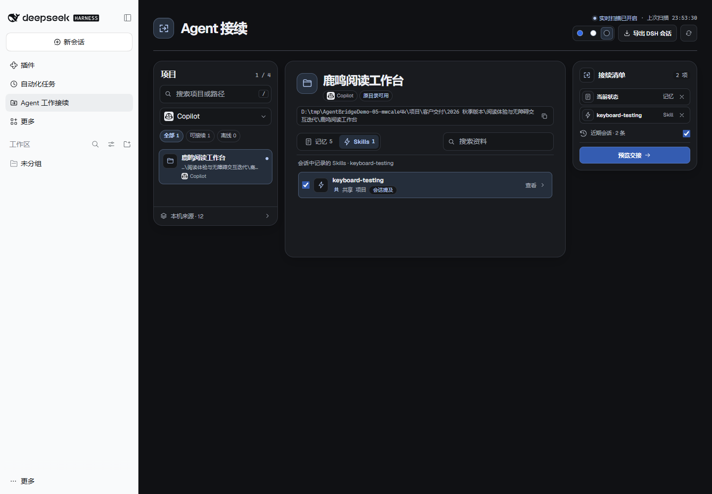

找到项目，再继续
按 Agent、名称、路径和目录状态筛选。置顶常用项目，最近接续的项目也会出现在列表前面。
DSH 的 Agent 工作接续插件
在 DeepSeek Harness 中找到其他 Agent 的项目、记忆和 Skills，把需要的上下文带进新的开发会话。
本地读取 · 预览后导入 · Markdown 导出

从你常用的 Agent 开始
FIND YOUR CONTEXT
从散落的工作区里找到要继续的项目，查看可读取的记忆、Skills 和会话记录。
按 Agent、名称、路径和目录状态筛选。置顶常用项目，最近接续的项目也会出现在列表前面。
单独归档，或筛选后批量归档。需要时可以查看、恢复和撤销。

资料勾选按项目保存。蓝、白、黑三套主题，选择你喜欢的一种。

从本机发现的项目中找到工作目录。
勾选记忆、Skills 和需要的近期会话。
核对交接内容，打开 DSH 草稿或导出 Markdown。
BUILT FOR YOUR WORKSPACE
插件按当前用户的常见数据目录扫描，也支持配置自定义路径。不同 Agent 的可读取内容有所区别。
Codex、Claude Code、OpenCode、Qoder、WorkBuddy、Gemini CLI 和 Qwen Code 的可识别工作目录与会话。
Copilot、TRAE 和 Antigravity 的可识别工作区及部分记录。部分会话可来自 AgentsView 归档。
项目内的共享笔记、交接文件，以及相关 Agent 和共享目录中可读取的 Markdown 与 Skills。